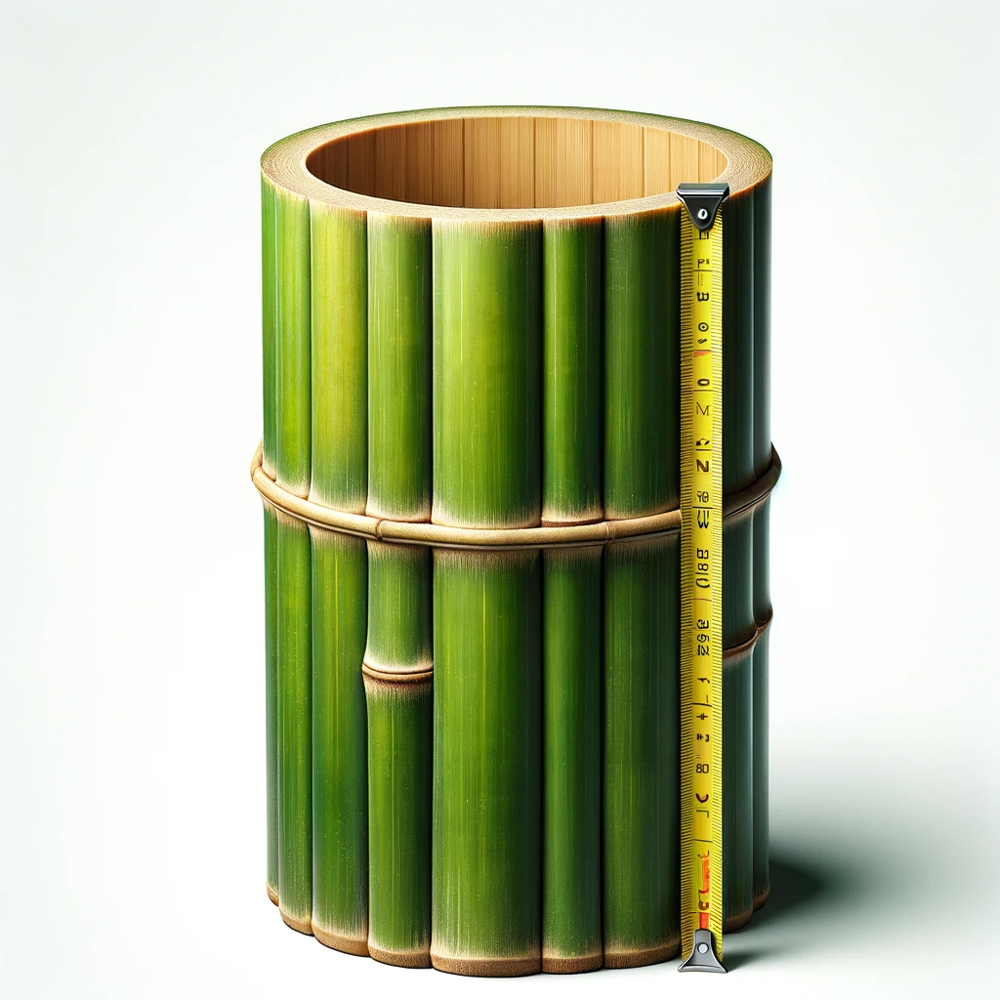
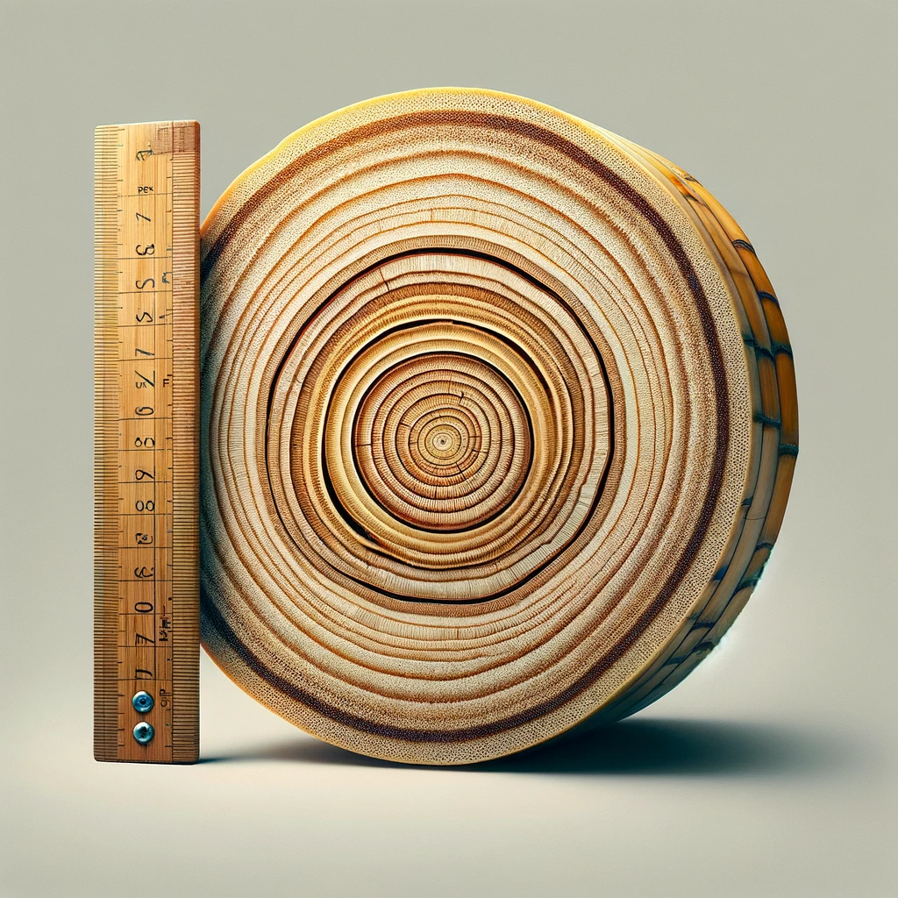

Bambusa Vulgaris
The average weight of a 1-foot section of Bambusa vulgaris is approximately 1.48 kilograms (3.31 pounds).
Download CalculationsBambusa Vulgaris
The average weight of a 1-foot length (4" diameter) section of Bambusa vulgaris is approximately 1.48 kilograms (3.31 pounds).
Download Calculations